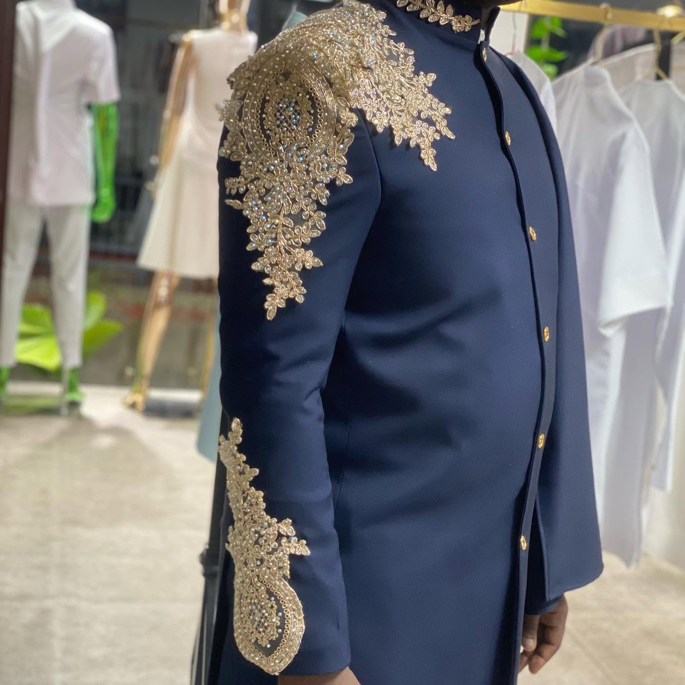

Custom Tailoring
The making of a difference.
A Stallion Outlook piece is never pulled from a rack. It is discussed, measured, cut, checked and finished — with you at the centre of every step.
Consultation · Cloth · Cut · Fitting · Finish
How It Works
From first word
to final stitch.
Custom tailoring should feel generous, not intimidating. Here is the full path, from the first message to the day you wear it.

Talk it through
We start with a conversation — in the studio or on WhatsApp. Tell us the occasion, who will see it and what you want the outfit to say. We will ask about your usual fit and anything you have never liked about clothes you own.
By the end, we will have a clear idea of the garment and a realistic sense of timing.

Choose cloth & design
Next comes the fun part. We help you choose a fabric that suits the occasion and the climate, then settle the details: neckline, embroidery, lapel, lining, buttons and finish.
Nothing is a package deal. If you have a reference photo, send it — we will happily work from it.

Measure & cut
We take a full set of measurements and build the pattern around your body. This is where made-to-measure earns its name — the cut follows you, not the other way around.
The cloth is then cut carefully, with the pattern checked against your measurements before a stitch is sewn.

First fitting
You come back to try the piece before it is finished. We check the fall of the cloth, the ease of movement and every point where a garment can pull or sit badly.
Adjustments are made here — this is the step that turns a good garment into the right one.

Finish & press
Buttons are secured, hems are set and the piece is pressed and inspected. We look at it the way you will — from a distance, up close and in movement.

Yours to wear
Your garment is packed and handed over with care instructions. And the relationship does not end there — we remain available for future alterations, repairs and the next piece.
Fabric & Finish
The details you
feel before you see.
Weight, texture, lining, stitch. These are the choices that decide whether a garment merely looks good or actually lives with you.


Good to Know
Questions,
answered.
Still unsure about something? Send us a message on WhatsApp and we will answer directly.
Ask on WhatsAppHow long does a made-to-measure piece take?
It depends on the garment, the cloth and the amount of detailing. We give you a realistic timeline at the consultation and keep you updated as the piece moves through the workroom.
Do I have to visit the studio?
Not necessarily. We can begin with a conversation over WhatsApp and arrange measurements and fittings at a time that works for you. Exact location details are shared when you book.
Can I copy a design I have seen online?
Often, yes. Send us a reference image and we will talk through what can be adapted to your measurements, chosen cloth and the way you want it to fit.
Do you make matching outfits for groups?
Yes. Weddings and group occasions are a big part of our work. We can coordinate colour, cloth and detailing across a wedding party or family group.
What if the fit is not right?
That is what the fitting is for. We adjust the piece before final finishing. We also help with alterations further down the line.
Do you offer laundry or aftercare?
Yes — ask about our fitting, alteration and garment care services when you enquire.
Start Something
The first step is a conversation.
Tell us what you have in mind. We will take care of the rest, one careful step at a time.